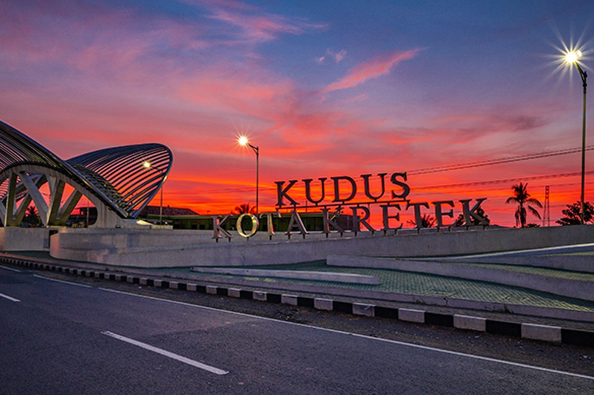
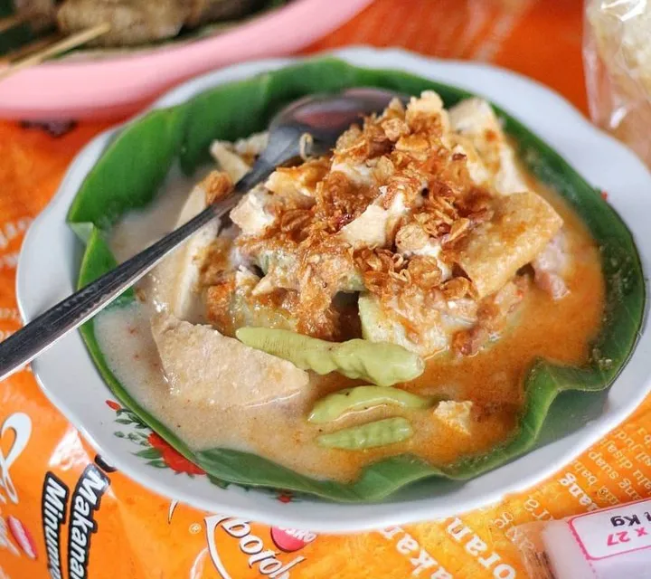
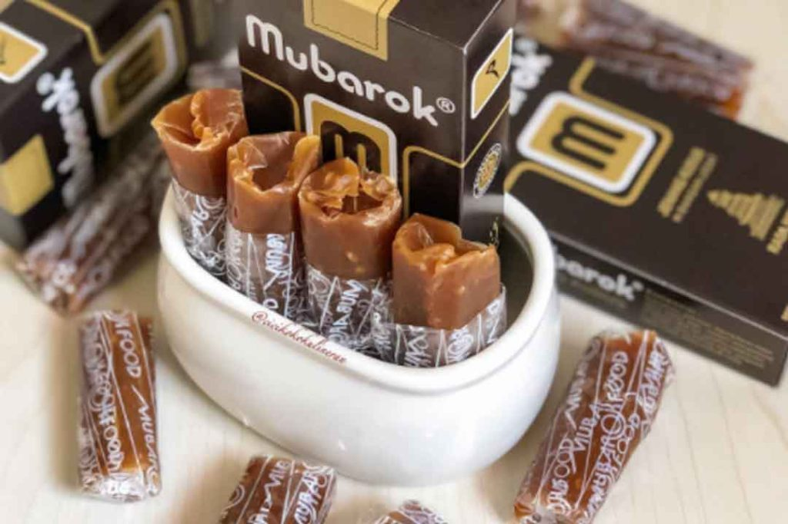

Sejarah

Kota Kudus, juga dikenal sebagai Kota Kretek atau Kota Santri,
adalah sebuah kota di Jawa Tengah yang terkenal dengan industri
rokok (kretek) dan pesantrennya. Kota ini memiliki sejarah panjang
dalam penyebaran agama Islam dan akulturasi budaya, yang terlihat
dari Menara Kudus dan tradisi Dandangan. Kudus juga dikenal dengan
kuliner khasnya seperti soto kudus dan jenang.
Destinasi Wisata
Pijar Park

Pijar Park adalah tempat ideal untuk liburan keluarga: udara
sejuk,pemandangan ciamik, fasilitas lengkap, dan harga
bersahabat—cocok untuk refreshing, berburu spot foto, hingga
menginap menikmati suasana pegunungan.
Museum Kretek

Museum unik yang menyimpan sejarah industri rokok kretek di Kudus.
Pengunjung dapat melihat koleksi alat produksi, foto, replika
pabrik, hingga kendaraan klasik. Lingkungannya juga dilengkapi
taman asri dan mini zoo, membuatnya menarik untuk edukasi
sekaligus rekreasi.
Air Terjun Montel

Terletak di Colo, lereng Gunung Muria, Air Terjun Montel memiliki
ketinggian sekitar 25 meter dengan air jernih dan udara sejuk
pegunungan. Suasananya asri dikelilingi pepohonan hijau, cocok
untuk melepas penat sambil menikmati panorama alam.
Makanan Khas
Soto Kudus

Soto berkuah bening dengan cita rasa gurih khas, dibuat dari
daging ayam atau kerbau, dilengkapi tauge, seledri, dan bawang
goreng. Penyajiannya dalam mangkuk kecil membuatnya terasa pas dan
nikmat disantap hangat.
Lentog Tanjung

Hidangan sarapan khas Kudus berisi lontong, sayur nangka muda
berbumbu santan, dan tahu. Rasanya gurih dengan sedikit manis,
disajikan di piring beralas daun pisang sehingga aroma dan cita
rasanya semakin sedap.
Jenang Kudus

Penganan manis berbahan ketan, gula merah, dan santan yang dimasak
hingga kental dan kenyal. Rasanya legit, aromanya harum, sering
dijadikan oleh-oleh khas karena tahan lama dan mudah dibawa.